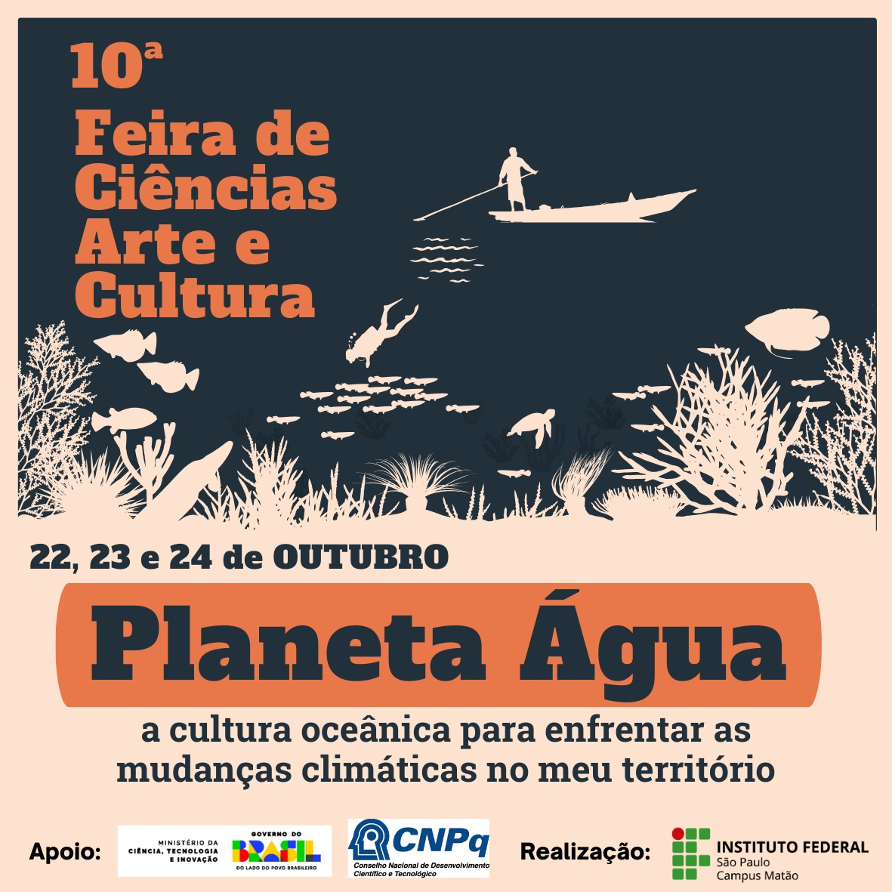

11ª Feira de Ciências, Arte e Cultura
"CIÊNCIA DELAS: Meninas e Mulheres nas Ciências"
A 11ª edição reafirma o compromisso do IFSP Matão com a popularização da ciência e o protagonismo estudantil. Homenageamos as contribuições femininas históricas e contemporâneas nas Ciências Humanas, Sociais, Artes, Linguagens, Matemática e Ciências da Natureza.

ℹ️ Informações Gerais (2026)
- Público-alvo: Alunos do 9º ano do ensino fundamental e dos 3 anos do ensino médio (IFSP Matão e demais escolas).
- Equipes: 5 estudantes + 1 orientador (e coorientador opcional).
- Requisitos Temáticos: Vínculo com ao menos 2 ODS da ONU e homenagem a uma mulher cientista/pesquisadora.
- Local: IFSP Campus Matão — Rua Stéfano D'avassi, 625, Nova Cidade, Matão/SP (ver mapa).
- Taxa: Evento 100% Gratuito.
Contagem Regressiva para a Feira
28 a 30 de Outubro de 2026 — IFSP Matão
Normas & Regulamento 2026
Conheça as diretrizes para participar da 11ª Feira de Ciências, Arte e Cultura do IFSP Matão.
👩🔬 Diretrizes do Tema Central
- • Tema: Ciência Delas (Meninas e Mulheres nas Ciências).
- • O projeto deve homenagear ou fundamentar-se no trabalho de pelo menos uma mulher cientista, pesquisadora ou intelectual.
- • Deve apresentar relação clara com ao menos 2 Objetivos de Desenvolvimento Sustentável (ODS/ONU).
👥 Equipes e Categorias
- • Composição: Até 5 estudantes por grupo + 1 professor(a) orientador(a).
- • Elegibilidade: Estudantes do 9º ano EF e do 1º ao 3º ano do Ensino Médio.
- • Áreas: CNT (Natureza), LT (Linguagens), MT (Matemática) e CHST (Humanas/Sociais).
Guia Prático de Sustentabilidade no Estande
"Sustentabilidade também é ciência"
Ser sustentável não significa apenas citar uma ODS no trabalho. Significa incorporar esses princípios às decisões tomadas ao longo de todo o projeto. Planejar, reduzir desperdícios, escolher materiais conscientemente, reutilizar, organizar e dar a destinação correta aos resíduos são atitudes que demonstram responsabilidade científica e contribuem para a formação acadêmica e profissional.
Permitido e Incentivado
Práticas recomendadas para a estrutura e apresentação
🎨 Decoração e Estrutura do Estande:
- Tecidos naturais/reutilizáveis: algodão, juta, chita ou tecidos de reuso.
- Papéis limpos: kraft, papelão e papéis fidedignos sem plastificação.
- Elementos vivos: plantas naturais em vasos.
- Estruturas duráveis: luzes LED e estruturas de madeira/metal reutilizáveis.
- Reaproveitamento: objetos do cotidiano ressignificados.
🍽️ Alimentos e Bebidas (Degustações):
- Prioridade total: utensílios 100% reutilizáveis (vidro, inox, louça).
- Alternativas compostáveis: copos de papel, potes/barquinhas de papelão ou kraft e talheres de madeira.
Rigorosamente Proibido
Vedado sem exceção em qualquer estande
⚠️ Decoração e Estrutura do Estande:
- Plásticos de uso único: copos, pratos, talheres, canudos e recipientes plásticos.
- TNT e EVA: expressamente vedado o uso de placas de EVA e tecido sintético de TNT.
- Glitter e Purpurinas: proibidos microplásticos soltos e pós brilhantes.
- Isopor (EPS) e Balões: proibido uso de isopor e bexigas de festa.
- Papéis Especiais e Adesivos: papéis metalizados, laminados, com brilho e adesivos plásticos de difícil remoção.
🗑️ Descarte e Limpeza:
- Lixo misturado: proibido misturar resíduos recicláveis com não recicláveis no estande.
⚖️ Pós-Evento & Avaliação Prática no Estande
- • Desmontagem e Limpeza: Ao final da feira, o grupo e orientador(a) são diretamente responsáveis pela limpeza do estande e correta separação de resíduos (Reciclados vs. Não Reciclados).
- • Critério Obrigatório da Banca Examinadora: A conduta sustentável no estande e o cuidado com a gestão de resíduos serão rigorosamente avaliados e pontuados pelos jurados como critério prático do trabalho.
Comissão Organizadora • Comissão de Sustentabilidade e Gestão de Resíduos Sólidos • IFSP Câmpus Matão
Projetos Confirmados (2026)
Confira a lista completa dos projetos que participarão da 11ª edição, distribuídos entre o 2º Ano, 3º Ano (Projeto Integrador), Projeto Mais Ciência e Projetos de Extensão.
| Escola / Categoria | Tema do Projeto / Cientista Homenageada | Integrantes | Orientador(a) |
|---|---|---|---|
| IFSP-MTO2º AnoT-001 • Sala 103 | Ficou fora da geladeira: ciência ou sorte? Mary Engle Pennington e a ciência dos alimentos seguros 👩🔬 Homenageada: Mary Engle Pennington |
Gabriella Pastori, Lorena Lourenço dos Santos, Luana Barroso Alvares, Manuela de Moraes Gomes, Sofia Barbosa | Bruna Drielen Ferreira |
| IFSP-MTO2º AnoT-002 • Sala 103 | EcoAçaí: uso de resíduos amazônicos na produção de carvão ativado magnético para tratamento de água 👩🔬 Homenageada: Clara Pandolfo |
Felipe Amaral de Freitas, Lara Lopes, Bruno Galvão Damiani, Leonardo Cristiano Moutinho, Matheus Brumatti Joaquim | Carla Yuri Kisen |
| IFSP-MTO2º AnoT-007 • Sala 106 | Do Leite ao Iogurte: A Ciência por Trás da Transformação 👩🔬 Homenageada: Marcela Albuquerque Cavalcanti de Albuquerque |
Allana Tayane Silva, Caroline Oliveira Dias, Gabriela Mendonça, Larissa de Souza Reis, Marina Malagoli Rodrigues Lopes | Caroline Pigatto De Nardi |
| IFSP-MTO2º AnoT-003 • Sala 103 | Quem somos nós?: Retratos simbólicos da singularidade humana 👩🔬 Homenageada: Frida Kahlo |
Gabriele Melo, Sofia Falconi, Pedro Mancini, Livia Guimarães, Maria Júlia Toledo | Chris Tragante |
| IFSP-MTO2º AnoT-004 • Sala 105 | Mulheres do século XX na ciência dos alimentos 👩🔬 Homenageadas: Iracema de Oliveira Moraes; Eloísa E. Correa Garcia; Gláucia M. Pastore; Delia Rodriguez Amaya; Rosana Goldbeck; Ana Carla K. Sato; Mariangela Hungria; Nilda F. Ferreira Soares |
Heloa Vitoria Sampaio, Maria Eduarda Arroyo, Isabela Gonçalves Agostini, Maria Júlia Guirra, Guilherme Maschiari Vilela | Claudia Regina Cançado Sgorlon Tininis |
| IFSP-MTO2º AnoT-005 • Sala 105 | Do Álbum da Copa ao Meio Ambiente: resíduos pequenos, grandes impactos 👩🔬 Homenageada: Denise Alves Fungaro |
Íris Eduarda Forcel Roncada, Júlia Gabrieli Bessi, Lara Martins Cacavelli, Nauani Araujo Ferreira, Sarah Beatriz Doria Alves | Daniara Cristina Fernandes |
| IFSP-MTO2º AnoT-006 • Sala 105 | A Ciência da Água: As Descobertas de Márcia Barbosa 👩🔬 Homenageada: Márcia Cristina Bernarde Barbosa |
Adrian Heinrick de Souza Rodrigues, Gustavo Moratta da Silva, Matheus Paviani, Vitória Oliveira Muniz, Wilton Silva Rodrigues Júnior | Daniela Cristina Selmini |
| IFSP-MTO2º AnoT-008 • Sala 106 | Influência de microrganismos eficientes na germinação de plantas nativas do cerrado 👩🔬 Homenageada: Johanna Döbereiner |
Gabriela Dias, Manuela Setin Cacimiliano, Samarah Hikari Mantovani Nagata, Richard Ueno, Maria Julia de Almeida | Eliziane Carla Scariot |
| IFSP-MTO2º AnoT-009 • Sala 106 | O Magnetismo na Escala Atômica: A Evolução do Nanomagnetismo no Brasil e o Pioneirismo da Professora Helena Maria Petrilli 👩🔬 Homenageada: Profª. Drª. Maria Helena Petrilli |
Maria Eduarda dos Santos Moura, Ana Júlia da Silva, Livia Messi Simis, Maria Eduarda Piedadi Scardoelli, Laine Souza | Filipe Camargo Dalmatti Alves Lima |
| IFSP-MTO2º AnoT-010 • Sala 107 | Metais da Vida: a Química Bioinorgânica da Professora Ana Maria da Costa Ferreira e o Papel das Mulheres na Ciência Brasileira 👩🔬 Homenageada: Profª. Drª. Ana Maria da Costa Ferreira |
Júlia Vitória Castro, Samuel Arjona Teixeira de Carvalho, Nivia Thaís do Prado Santos, Angelina Duarte Bido, Ruan Felipe Ribeiro Rocha | Filipe Camargo Dalmatti Alves Lima |
| IFSP-MTO2º AnoT-011 • Sala 107 | Mulheres em Camadas: a Química dos Materiais Lamelares e o Legado Científico da Professora Vera Regina Leopoldo Constantino 👩🔬 Homenageada: Profª. Drª. Vera Regina Leopoldo Constantino |
Maria Eduarda Cuzin de Oliveira, Mariana Aparecida de Andrade, Nicolly Lorena dos Anjos, Isabela Silva Barreto, Miguel Baldoino Araujo | Filipe Camargo Dalmatti Alves Lima |
| IFSP-MTO2º AnoT-012 • Sala 107 | Do Lixo ao Luxo: Kombucha Sustentável como Alternativa de Baixo Custo 👩🔬 Homenageada: Hannah Crum |
Nicolas Kenji Sugahara, Sthefany Rodrigues Dal Rovere, Maria Eduarda Alberice, Nicoly Gavioli Marinho, Gabriel Maciel Cyniro de Carvalho | Jane Karla de Faria Borges Machado |
| IFSP-MTO2º AnoT-013 • Sala 108 | Da Casca ao Pote: Ciência, Sustentabilidade e o Aproveitamento Integral dos Alimentos 👩🔬 Homenageada: Dra. Ana Cristina Atti dos Santos |
Maria Eduarda dos Santos, Isabelle Nataly Pires da Silva, Cauã Correria dos Santos, Otavio Venâncio Ferreira da Silva, Guilherme Venceslau de Melo | João Pedro Bueno de Oliveira |
| IFSP-MTO2º AnoT-014 • Sala 108 | Maria Firmina dos Reis e a produção do conhecimento negro no Brasil 👩🔬 Homenageada: Maria Firmina dos Reis |
Jaqueline de Souza Machado, Livia Maria Pereira, Laura Abrantes Lobão, Ana Lívia dos Santos, Heloísa Caroline Teodoro Marcelino | Jonatan dos Santos Donato Alves |
| IFSP-MTO2º AnoT-015 • Sala 108 | Centenário da visita de Marie Curie ao Brasil: 1926 - 2026 👩🔬 Homenageada: Marie Curie |
Sophia Gabrielle Alves da Silva, Mirela Zanoni Gimenez, Lucas Eduardo Negri, Leonardo Miguel de Souza Trindade, Edvaldo Junior Silva Araújo | José Antonio Maruyama |
| IFSP-MTO2º AnoT-016 • Sala 109 | De origem humilde à pesquisadora internacional: a saga da araraquarense Heloisa Helena Barretto de Toledo 👩🔬 Homenageada: Heloisa Helena Barretto de Toledo |
Isabelly Rebeca de Oliveira, Jhenifer Lopes, Maria Júlia Miquelino, Kauane Vitória Nunes da Silva, Maria Emanuely Schimicoski | Juliana Barretto de Toledo |
| IFSP-MTO2º AnoT-017 • Sala 109 | Mulheres na Ciência: Ana Primavesi e a Revolução Agroecológica 👩🔬 Homenageada: Ana Primavesi |
Maria Eduarda Janini, Yasmim de Paula Silva, Yasmim Vitória Vieira Miranda, Vitória Luciana Martinelli, Eduardo Francisco Barbosa Andre Chrispim | Leandro Vieira |
| IFSP-MTO2º AnoT-018 • Sala 109 | Representação da Cultura Indígena no Cotidiano 👩🔬 Homenageadas: Sônia Guajajara e Watatakalu Yawalapiti |
Maria Candida Ruiz, Vitória Muniz, Gabrielly Voltolini, Sal Fisher Paiva, Hideki Cael Tavares da Silva | Valquíria Tenório |
| IFSP-MTO2º AnoT-019 • Sala 110 | Mulheres e suas contribuições para o estudo e a exploração do espaço 👩🔬 Homenageadas: Katherine Johnson, Dorothy Vaughan, Mary Jackson e Duília de Mello |
Byanka Nayana Bordin, Evelyn Nicoly da Mota Queiroz, Ricardo Luís Felipe Filho, Vivian Isabella Vomiero Marcatto, Leticia Aparecida Ferreira de Souza | Valquíria Tenório |
| IFSP-MTO2º AnoT-020 • Sala 110 | Bactérias que Alimentam o Mundo: A Revolução Verde da Agricultura Sustentável 👩🔬 Homenageada: Mariangela Hungria da Cunha |
Cecília Calegari da Silva, Evellyn Moreira Rosa, Gabriela Rodrigues Morais, Igor Ferreira Master, Otávio Augusto Sena Padilha | Vívian de Oliveira Lima |
| IFSP-MTO2º AnoT-021 • Sala 110 | Reconstruindo Vidas: O Papel das Mulheres Brasileiras na Medicina Regenerativa e no tratamento do câncer 👩🔬 Homenageadas: Tatiana Coelho de Sampaio e Mayana Zatz |
Jenifer Santos Luiz, João Daniel Gonçalves Ferreira, Vitor Gabriel Veríssimo da Silva, Yasmin Maia de Morais, Pedro Zoppi | Vívian de Oliveira Lima |
| IFSP-MTO3º Ano (Integrador)T-022 • Sala 201 | Entre Grãos e Gotas: Produção de Etanol por Fermentação Alcoólica e Desenvolvimento de Licor de Café |
Isabella Vicente de Souza, Lucas Henrique dos Santos, Manuela Calabres França, Maria Victória de Souza, Sophia Rebeca França, Victória Micaela de Souza | Caio Fernando Gromboni |
| IFSP-MTO3º Ano (Integrador)T-023 • Sala 201 | Simulação da contaminação microbiológica e rendimento fermentativo |
Lavinnya Pontes Camargo, Ryan Luiz Da Silva, Ricardo Dos Santos Barata Filho, Marcos Roberto Heldes Júnior, Felipe Iago dos Reis | Caroline Pigatto De Nardi |
| IFSP-MTO3º Ano (Integrador)T-024 • Sala 201 | Bactérias do Rúmen na Produção de Etanol 2G |
Ana Caroline França, Ana Maria dos Santos Lourenço, Isabelly Viscardi, Pedro Wetterich Leite | Christiann Davis Tosta e Eliziane Carla Scariot |
| IFSP-MTO3º Ano (Integrador)T-025 • Sala 203 | Tijolo ecológico a partir do reaproveitamento de resíduos dos setores sucroenergético e metalúrgico |
Isabella Calegari da Silva, Laura Bergamim Cinel, Maria Leticia Pires, Raul Militão dos Santos | Felipe Batistella Filho |
| IFSP-MTO3º Ano (Integrador)T-026 • Sala 203 | Aromatização de bebidas |
Beatriz Vitória Gevezier Costa, Enzo Henrique Lino De Oliveira, Gabriel Augusto Alves e Maria Eduarda Oliveira Pio | Fernando César Gazola |
| IFSP-MTO3º Ano (Integrador)T-027 • Sala 203 | Doce raiz |
Gabriel Mora de Souza, Giovana Cristina da Silva, Isabelly Cristine Rodrigues de Souza, Maria Eduarda Henrique de Campos | Fernando César Gazola |
| IFSP-MTO3º Ano (Integrador)T-028 • Sala 205 | Aproveitamento de cascas de laranja: extração de compostos aromáticos e obtenção de hidrolato |
Breno Augusto da Mota, Miguel Otavio Biffi, Olavo Petinatti Fernandes de Abreu e Pedro Gomes Moraes Neto | João Pedro Bueno de Oliveira |
| IFSP-MTO3º Ano (Integrador)T-029 • Sala 205 | Myrian de Toledo: Pioneirismo na Análise Instrumental da Seção de Bebidas e Doces do Instituto Adolfo Lutz (SP) |
Kauana Vitória Fonseca Prandi e Maria Victória de Souza | Juliana Barretto de Toledo |
| IFSP-MTO3º Ano (Integrador)T-030 • Sala 205 | Do café ao pão de mel |
Ágata Paola Moreira, Maria Heloísa Duarte, Miguel Dias Alixame, Milla Geovana Fernandes | Bruna Drielen Ferreira Gonçalves e Juliana Infante |
| IFSP-MTO3º Ano (Integrador)T-031 • Sala 206 | Gelato Cítrico: Morango, Limão e Manjericão |
Ester Gomes da Silva, Larissa Barroso dos Santos, Mariana de Oliveira, Jonathan Gomes das Neves | Bruna Drielen Ferreira Gonçalves e Juliana Infante |
| IFSP-MTO3º Ano (Integrador)T-032 • Sala 206 | Nhoque vegetariano |
Geovana Carvalho de Andrade, Geovana Schmidt Leite, Maria Clara da Silva, Maria Luiza Nicolau Carvalho | Bruna Drielen Ferreira Gonçalves e Juliana Infante |
| IFSP-MTO3º Ano (Integrador)T-033 • Sala 206 | O encontro do doce com o salgado |
Amanda Rafaela do Nascimento, Caren Carla Rocha do Nascimento, Fernanda Gabrieli Carvalho Fortunato, Gabrielly Teixeira, Guilherme Henrique Chiuchi | Bruna Drielen Ferreira Gonçalves e Juliana Infante |
| IFSP-MTO3º Ano (Integrador)T-034 • Sala 207 | Pastel sem glúten com recheio agridoce de queijo e mel |
Alan Duarte Lobiano Junior, Matheus Bossini Marcondes dos Santos, Matheus Abelhaneda Travensolo, Alexandre Lima Rossini | Bruna Drielen Ferreira Gonçalves e Juliana Infante |
| IFSP-MTO3º Ano (Integrador)T-035 • Sala 207 | Ravióli de Duplo Recheio: Sabor Artesanal para a Rotina Diária |
Bianca Alves, Isabelly Gutierres, Leonardo Leite, Sophia Pires | Bruna Drielen Ferreira Gonçalves e Juliana Infante |
| IFSP-MTO3º Ano (Integrador)T-036 • Sala 207 | Sabor Para Todos |
Isabela Zanella Pereira, Julia Maria S. Barbosa, Letícia C. Oliveira, Noemy Gevezier, Paulo Henrique G. dos Santos | Bruna Drielen Ferreira Gonçalves e Juliana Infante |
| IFSP-MTO3º Ano (Integrador)T-037 • Sala 208 | Tilápia Tropical: Praticidade e sabor em uma experiência agridoce |
Ana Alice Angeloni, Giovana Paviani Bessi, Heloisa Beatriz Fincolo, Rafaella Azevedo, Richard Almeida | Bruna Drielen Ferreira Gonçalves e Juliana Infante |
| IFSP-MTO3º Ano (Integrador)T-038 • Sala 208 | Da casca ao laboratório: uma nova rota para os resíduos cítricos |
Bryan dos Santos Gonzaga, Felipe Machado Figueira, Isabela Soares de Souza, Maria Julia Pinheiro Di Santo | Andréia Aparecida Cecílio e João Henrique Saska Romero |
| IFSP-MTO3º Ano (Integrador)T-039 • Sala 208 | Do descarte ao material tecnológico: transformando resíduos metálicos em materiais do futuro |
Antonia Gabriela Barbosa Francisco, Lavinia Viale Silva, Lorena Tayrine de Sousa, Maria Fernanda Miguel Barboza, Vinicius de Souza Chiozzini | Andréia Aparecida Cecílio e João Henrique Saska Romero |
| IFSP-MTO3º Ano (Integrador)T-040 • Sala 209 | Entre reconhecimento e pertencimento: uma análise científica da percepção da comunidade de Matão sobre o IFSP – Campus Matão |
Agata Silverio de Lucca Silva, Gabriel Ferreira Santana, Luis Felipe Pereira do Carmo, Victor Rodrigues | Andréia Aparecida Cecílio e João Henrique Saska Romero |
| IFSP-MTO3º Ano (Integrador)T-041 • Sala 209 | Fato ou fake? A química entra em jogo contra a desinformação |
Igor de Melo Frauches, Natanael Ferreira Santos do Carmo, Pedro Henrique Lopes, Vytor Hugo Alves de Jesus | Andréia Aparecida Cecílio e João Henrique Saska Romero |
| IFSP-MTO3º Ano (Integrador)T-042 • Sala 209 | O que consumimos? Uma investigação científica sobre bebidas açucaradas comercializadas no interior paulista |
Ana Laura Rebelatti, Eduardo Mattos Barboza, Julia Franca Santos, Pablo Tito Lepre da Silva, Rafaela Machado Vieira | Andréia Aparecida Cecílio e João Henrique Saska Romero |
| IFSP-MTO3º Ano (Integrador)T-043 • Sala 209 | O que o solo revela? Investigando as terras de Matão |
Giovane Santos Lima, Diogo Ferreira Silva, Isabelle Moratta, Luan Felipe Silva, Marielly Edwiges | Andréia Aparecida Cecílio e João Henrique Saska Romero |
| EE José Inocêncio da CostaMais CiênciaT-044 • Sala 111 | Do algoritmo à cidades inteligentes: A contribuição de Ada Lovelace para o mundo contemporâneo |
Davi Luis Sousa Falco e Vitor Gabriel Oliveira Martins | Willian Guné |
| EE Profª Helena BorsettiMais CiênciaT-045 • Sala 111 | Mentes que criam, soluções que incluem |
Ana Beatriz Aparecida Gregio, Enzo Mendonça Bernascone, Gabriela Rodrigues de Oliveira, Heloá Beatriz Lotti, Hugo Correa Figueiredo, Julia Baldin, Laura Victória Benatti, Leonardo Rafael Paizani, Lorrane Vitória de Andrade Aro e Ryanne dos Santos Benivente | Julia Fernanda da Silva |
| EE Professora Chlorita de Oliveira Penteado MartinsMais CiênciaT-046 • Sala 111 | Canecando: Ciência e sustentabilidade em ação |
Arany Magalhães Freitas Filho, Larissa Coutinho de Freitas, Lavynya Vitória Lima Roque, Nicole de Freitas Jordão, Rodrigo Nunes Teodoro e Walisson Mendes dos Reis Silva | Bruna Vercesi da Costa, Ana Laura Amaral Rosa, Francisco Miguel Nogueira e Rafael Gentil |
| EM Adelino BordignonMais CiênciaT-047 • Sala 112 | Quatro mulheres, quatro perguntas, infinitas descobertas |
Bianca Barbosa Bergamim, Daniel Quintan Prada Marques Luiz, Isadora Fernandes Conde, Isadora Santos, João Pedro Macedo Mauri, Mateus Camargo, Maria Eduarda Mioto Fernandes, Miguel Andrella Lima, Miguel Lorenzo Magro e Pedro Gabriel De Souza | Fernando Prada Marques Luiz |
| EMEF Celso de Barros Perche (CAJU)Mais CiênciaT-048 • Sala 112 | Tecnologias e Educação: Jogos digitais a serviço do desenvolvimento dos alunos |
Nayara Cristina Sergi, João Eduardo Luz Dos Reis, Heloise De Lima Delfino, Manuela De Arruda Maximiano, Enzo Lessa Silva, Ana Cecylia Santos Costa, Sofia Vitória Lemos Vicente, Ana Julya Reis Da Silva, Edson Queiroz Neto e Vitor Hugo Madeira Lopes | Elisangela Fernandes Martins |
| Escola Municipal Antônio Carlos ManziniMais CiênciaT-055 • Sala 112 | Jornal Manzini e Projeto Mais Ciência |
Álice G. F Ribeiro, Arthur Munhoz, Beatriz Orlandini, Emanuelle Da R. Alves, Lucas V. Pimentel, Mathias Do N. Oliveira, Mirielly Ap. Da Silva, Noemi Tarantini, Rafaela N. Passerini e Rhyan Z. Pinheiro | Genesi T. C. Hespanhol |
| IFSP-MTOExtensãoT-049 • Sala 210 | Experimentando com o IFSP: Experimentação como estratégia didática |
David Alessandro Cabral e Douglas Leite Martins Da Hora | Caio Fernando Gromboni e Sandro Rogério de Sousa |
| IFSP-MTOExtensãoT-050 • Sala 210 | Experimentando com o IFSP: Oxirredução no cotidiano |
Caio Pereira Ferreira, Daniel Castilho, Larissa Pires, Pamella Caruso Silva, Lucas Antonio da Silva e Felipe Diego Adriano | Caio Fernando Gromboni e Sandro Rogério de Sousa |
| IFSP-MTOExtensãoT-051 • Sala 210 | A produção de marcadores de página com papel reciclado e extrato de espinafre |
Aghata Crystini Silvério, Júlia Bianca Andrade Silva, Talita Vanessa de Brito e Wesley Gabriel Mendonça | Carolina Lourencetti e Francisco Otavio Cintra Ferrarini |
| IFSP-MTOExtensãoT-052 • Sala 211 | Do Urucum ao papel: produção de papel reciclado com corante natural |
Adrielle Perpetuo Santos, Marina Ferreira Nicácio e Wanny Maysa Domingos Araújo | Carolina Lourencetti e Francisco Otavio Cintra Ferrarini |
| IFSP-MTOExtensãoT-053 • Sala 211 | Papel reciclado e corante de hibisco: oficinas de educação ambiental |
Ana Julia Bonfim, Gabrielle Silva, Kemily Silva, Maria Julia Antunes e Maria Julia Ferrari | Carolina Lourencetti e Francisco Otavio Cintra Ferrarini |
| IFSP-MTOExtensãoT-054 • Sala 211 | Produção de papel reciclado com cúrcuma: experimentação e educação ambiental |
Bianca Paes de Oliveira e Bruna Rafaela Dias Monteiro | Carolina Lourencetti e Francisco Otavio Cintra Ferrarini |
|
🔍 Nenhum projeto encontrado Tente buscar por outro termo ou selecione a opção "Todos". |
|||
Inscrições Encerradas
O período para submissão de resumos e inscrições de trabalhos para a 11ª Feira de Ciências, Arte e Cultura do IFSP Matão foi oficialmente encerrado. Agradecemos a todas as equipes e orientadores participantes!
Modelos Oficiais & Guia de Orientação (2026)
Faça o download dos templates padronizados, da distribuição de salas e dos guias explicativos para elaboração do resumo e montagem do estande.
Distribuição de Trabalhos
Mapa completo de alocação dos 55 grupos por sala e instruções detalhadas de montagem dos estandes.
Modelo de Resumo
Template oficial em Word (.docx) com campos de metadados para indicação de Área, ODS da ONU e Cientista Homenageada.
Modelo do Painel
Template oficial em PowerPoint (.pptx) com layout, cabeçalho e dimensões padronizadas para impressão do pôster acadêmico.
Guia de Painéis
Guia oficial com orientações para montagem e diagramação do painel, detalhamento das seções e exigências de 2026.
Sustentabilidade
Guia prático de sustentabilidade no estande: materiais permitidos/proibidos, gestão de resíduos e critérios avaliativos.
Cronograma Oficial (2026)
Programação detalhada dos 3 dias da 11ª Feira de Ciências, Arte e Cultura (28 a 30 de Outubro de 2026).
Baixar Cronograma em PDF| Horário | 28/10/2026 (Quarta-feira) | 29/10/2026 (Quinta-feira) | 30/10/2026 (Sexta-feira) |
|---|---|---|---|
| 07h00 – 12h00 | Montagem dos estandes | Sem Atividade | Apresentação dos trabalhos |
| 12h00 – 13h00 | Almoço | Almoço | Almoço |
| 13h00 – 15h00 | Montagem dos estandes | Apresentação dos trabalhos | Desmontagem dos estandes |
| 15h00 – 16h00 | Montagem dos estandes | Apresentação dos trabalhos | 🎭 Apresentação Teatral |
| 16h00 – 17h00 | Montagem dos estandes | Apresentação dos trabalhos | 🏆 Premiação e Encerramento |
| 17h00 – 18h30 | Jantar | Jantar | -- |
| 18h30 – 20h30 | - | Apresentação dos trabalhos | -- |
| 19h00 – 20h30 | Abertura oficial e atração cultural | -- | -- |
Nossa História & Acervo
O evento teve sua primeira edição em 2016, nascendo da necessidade de promover a iniciação científica e a integração escolar. Desde sua origem, a feira é realizada em consonância com a Semana Nacional de Ciência e Tecnologia (SNCT), integrando o calendário nacional de popularização do conhecimento.

10ª Edição10ª Feira de Ciências (2025)
Relembre os trabalhos e informações da 10ª edição sobre a Cultura Oceânica e sustentabilidade.
Projetos de Destaque (2025)
Conheça os trabalhos 1º, 2º e 3º colocados premiados nas diferentes categorias da feira de 2025.
 2016 - 2025
2016 - 2025
Cartazes Históricos
Explore a galeria de flyers e cartazes promocionais de todas as edições anteriores da feira.
Localização & Contato
Venha prestigiar a 11ª Feira de Ciências, Arte e Cultura no IFSP Campus Matão ou fale com a comissão organizadora.
📍 Endereço do Evento
Instituto Federal de Educação, Ciência e Tecnologia de São Paulo (IFSP) — Campus Matão
Rua Stéfano D'avassi, nº 625 — Bairro Nova Cidade
Matão — SP, CEP: 15991-502
✉️ E-mail da Comissão Organizadora
Tem alguma dúvida? Envie uma mensagem para nossa equipe: